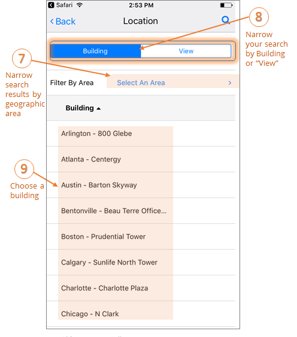
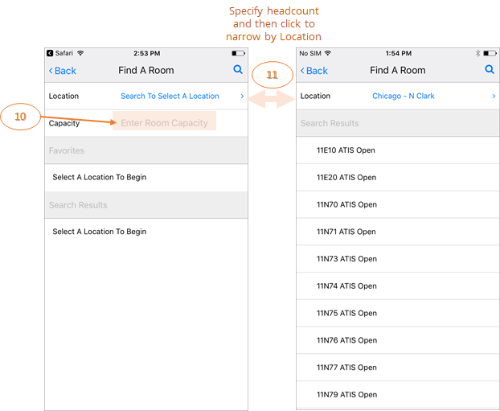

Find a Room
Add a location to your booking by searching for and adding a room.
- On the New Reservation screen, click the Room field.
- On the Find a Room screen, search and filter your room criteria by:
- Location = the geographic or physical location of the space, such as a country, region, district, etc.
- Building = the building in which the space is located.
- View = the custom grouping your Administrator might have defined to pool and classify types of space, such as Offices, Conference Rooms, Classrooms, or Campuses.
- Area = the area of a Building or View in which the space resides, such as floor, plaza, hall, or project.
- Choose a Building.

- Enter the numeric Capacity (total number of attendees) for your meeting to narrow Location search results. Rooms meeting your criteria will appear in the Search Results.

- When you click to select a room for your meeting, you will be redirected to the booking page, and the room you chose will now appear on your meeting.